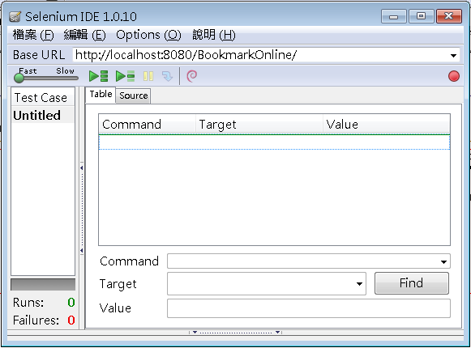
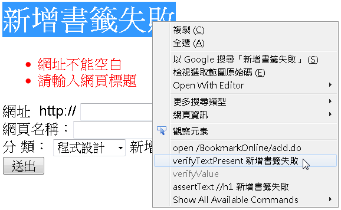
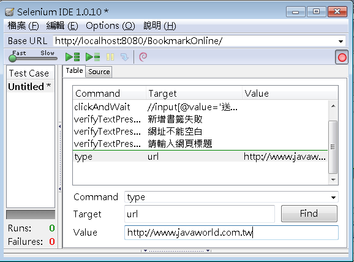
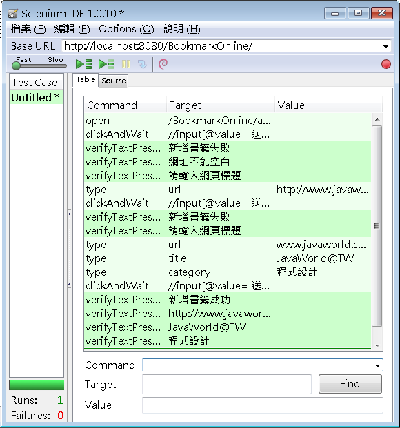

Selenium 是個Web應用程式測試系統，可驅動實際瀏覽器來進行頁面測試，你可以使用Selenium IDE來錄製瀏覽器上的實際操作，必要時在錄製的過程中安插額外指令，之後由Selenium IDE來驅動實際瀏覽器進行你指定的操作。
Selenium IDE 是個Firefox外掛，在安裝之後，可使用它來進行瀏覽器上的行為錄製，以 使用 HtmlUnit 中add.jsp的測試為例，在安裝並開啟Selenium IDE後的畫面如下：

如果右上的紅色按鈕為按下狀態，就可以開始用Firefox作實際操作，Selenium IDE會錄製相關動作。例如在按下add.jsp的送出按鈕後，若想驗證「新增書籤失敗」的文字是否出現，可以如下：

如果回到Selenium IDE，就會發現錄製的動作會出現在「Table」頁籤中，如果想要自行新增動作，可以如下：

type表示要在指定的輸入欄位鍵入指定的值。在完成所有的錄製與指令制定之後，讓紅色按鈕呈未按下狀態，就可以按下綠色箭頭，由Selenium IDE為你進行測試。例如，這邊所錄製的結果如下：

在按下紅色按鈕後，你也可以看到瀏覽器被驅動的畫面變化，你可以設定左上方的「Fast」、「Slow」，設定操作的快慢。
Selenium IDE錄製的動作使用HTML格式儲存，按下「Source」頁籤可以看到HTML的內容。你也可以自行編寫該內容，以符合你的操作需求。Selenium IDE也可以產生幾種程式語言的單元測試原始碼，以便你結合Selenium Remote Control (RC) 以撰寫程式方式進行測試，這之後再介紹。